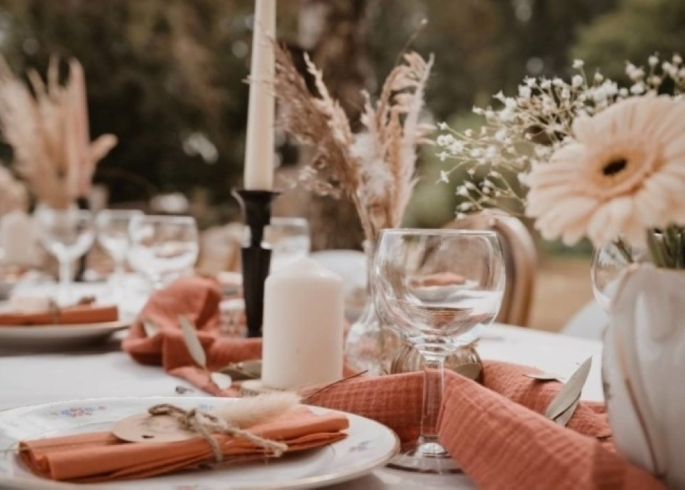

Partagez vos recettes et découvrez de nouvelles saveurs
Rejoignez notre communauté de passionnés de cuisine
Les témoignages de nos différents abonnés

"Pouvoir enregistrer mes recettes préférées est un vrai plus. Je n'ai plus besoin de chercher partout mes plats favoris. Tout est bien organisé dans ma collection personnelle" -sophieM.

"Les boutons j'aime et partager sont super pratiques.Je peux montrer à mes amis ce que j'ai aimé et ils peuvent en faire de même.C'est une excellente manière de découvrir de nouvelles recettes."-LucasD
"Partager mes recettes sur ce site est un vrai plaisir.La communauté est accueillante et j'ai reçu tellement de commentaires positifs et constructifs.Ca m'encourage à cuisiner encore plus!"-VincentK
"J'adore utiliser ce site pour rechercher des recettes par ingrédient. Il suffit d'entrer ce que j'ai dans mon frigo et il me propose des plats délicieux à préparer. Cela m'a sauvé de nombreuses fois quand je ne savais pas quoi cuisiner." -JulieP